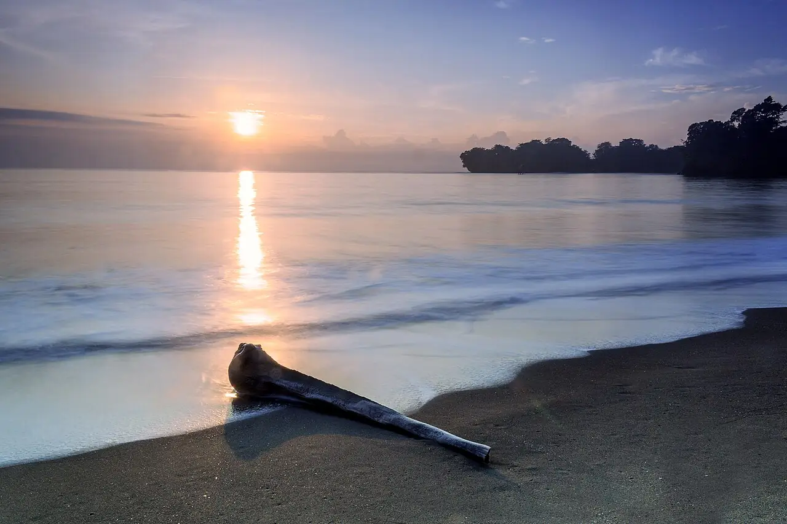

Batu Karas
Pangandaran, Java, Indonésie · surf, bodyboard

Petite baie au sud-ouest de Pangandaran, abritée par une pointe rocheuse. La droite y déroule doucement sur fond de sable et de roche, ce qui en fait l’un des spots d’apprentissage les plus connus de Java.
- Lieu
- Pangandaran, Java, Indonésie
- Niveau
- Débutant
- Activités
- surf, bodyboard
- Type d'eau
- Mer / océan
- Coordonnées
- -7.75, 108.50 (position approximative du secteur)
Dangers à connaître
- Line-up très fréquenté par les écoles de surf.
- Fond rocheux près de la pointe.
Le conseil d'Ocean Buddy
Loue une planche en mousse ou prends un cours sur place, et reste à l’intérieur de la baie quand la houle monte.
Ouvrir dans Ocean Buddy Télécharger sur l'App Store
Source : Fiche Ocean Buddy · septembre 2026 · à vérifier localement.